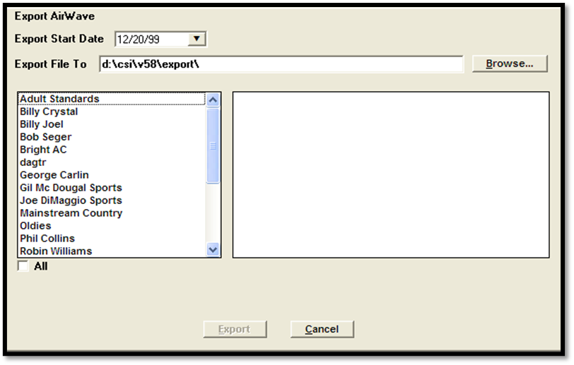
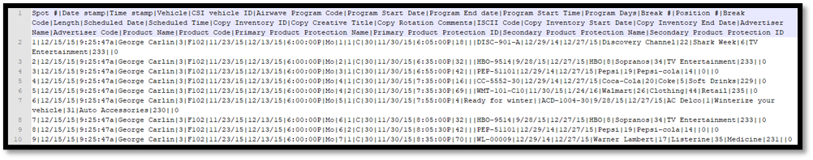
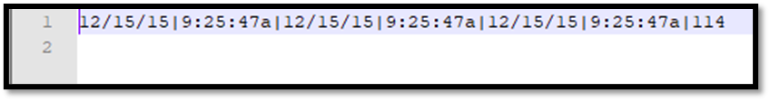

AirWave
The AirWave export produces two PSV files, one of which contains spots, and the other contains control information, for the final network broadcast schedule.
Setup
For each vehicle that will be included in the AirWave export, on the Vehicle -> Options -> Interface tab, enter the AirWave Program ID provided by AirWave. On the Vehicle Options Export tab, in the Traffic options area, check on “AirWave”.
Running the Export
Click on Tasks -> Exports- > AirWave to access the AirWave export screen.

Export Start Date: Enter the Monday of the week that will be exported.
Export File To: Browse to the folder you want to save the files to, typically CSI\Prod\Export.
Vehicle List: Select the vehicles to include in the export. Only the vehicles with “AirWave” checked on in the Export tab will be listed.
Press the Export button to create the export files.
File Information
Filename Structure
The files have the following filename structure: mmddyytmmddyyvnn.psv.
mmddyy: the start date of spots; always a Monday.
t: the file type code, where A means it contains all vehicles, P means it contains less than all vehicles, and C means it is the control file.
mmddyy: The end date of spots is always a Sunday, and is always 6 days after the start date.
vnn: indicates the version number, such as v01, v02, etc., starting at v01, and with the number incrementing by one each time the export is run for the same week. The spots file and control file that are generated at the same time will always have matching version numbers. Any partial exports must be re-exported when all vehicles for the week are ready.
.psv: file extension.
Example
If a file is generated for the week of 12/26/11, and it contains only 1 vehicle (in other words, not all vehicles), and it is the 4th such file generated for that week, the 2 files will be named:
122611p010112v04.csv for the Spot file
122611c010112v04.csv for the Control file.
Additional Information
If any change is made to one vehicle, all spots for all vehicles must be re-exported.
Each export file will always contain a full broadcast week, starting with midnight Monday up to midnight Sunday, for each vehicle included. If Sports vehicles cross midnight on Sunday night, they will be included in the week where the game began.
Output Examples
Spots File

Control File
